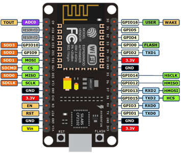

NodeMCU is an open-source LUA based firmware developed for the ESP8266 wifi chip. By exploring functionality with the ESP8266 chip, NodeMCU firmware comes with the ESP8266 Development board/kit i.e. NodeMCU Development board.
The NodeMCU (Node MicroController Unit) is an open source software and hardware development environment that is built around a very inexpensive System-on-a-Chip (SoC) called the ESP8266.
The ESP8266, designed and manufactured by Espressif Systems, contains all crucial elements of the modern computer: CPU, RAM, networking (wifi), and even a modern operating system and SDK.
When purchased at bulk, the ESP8266 chip costs only $2 USD a piece. That makes it an excellent choice for IoT projects of all kinds. 
NodeMCU Development board is featured with wifi capability, analog pin, digital pins, and serial communication protocols.
To get started with using NodeMCU for IoT applications first we need to know about how to write/download NodeMCU firmware in NodeMCU Development Boards. And before that where this NodeMCU firmware will get as per our requirement.
There are online NodeMCU custom builds available using which we can easily get our custom NodeMCU firmware as per our requirement.
To know more about how to build custom NodeMCU firmware online and download it refer to Getting started with NodeMCU